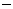

![[Front]](images/OpenGL3.gif)
![[Reference]](../buttons/ReferenceOff.gif)
![[Imp. Guide]](../buttons/ImpGuideOff.gif)
![[Index]](../buttons/IndexOff.gif) glReadBuffer: select a color buffer source for pixels.
glReadBuffer: select a color buffer source for pixels.
C Specification |
Parameters |
Description |
Errors |
Associated Gets |
See Also
void glReadBuffer(
GLenum mode)
- mode
- Specifies a color buffer. Accepted values are
GL_FRONT_LEFT, GL_FRONT_RIGHT,
GL_BACK_LEFT, GL_BACK_RIGHT,
GL_FRONT, GL_BACK,
GL_LEFT, GL_RIGHT, and
GL_AUXi, where i is between 0 and
GL_AUX_BUFFERS  1.
glReadBuffer specifies a color buffer as the source for subsequent
glReadPixels, glCopyTexImage1D, glCopyTexImage2D, glCopyTexSubImage1D, glCopyTexSubImage2D, and glCopyPixels commands.
mode accepts one of twelve or more predefined
values. (GL_AUX0 through GL_AUX3 are always
defined.) In a fully configured system, GL_FRONT,
GL_LEFT, and GL_FRONT_LEFT all name the front
left buffer, GL_FRONT_RIGHT and GL_RIGHT name
the front right buffer, and GL_BACK_LEFT and
GL_BACK name the back left buffer.
Nonstereo double-buffered configurations have only a front left and a back
left buffer. Single-buffered configurations have a front left and a front
right buffer if stereo, and only a front left buffer if nonstereo. It is an
error to specify a nonexistent buffer to glReadBuffer.
mode is initially GL_FRONT in single-buffered
configurations, and GL_BACK in double-buffered configurations.
- GL_INVALID_ENUM is generated if mode is
not one of the twelve (or more) accepted values.
- GL_INVALID_OPERATION is generated if mode
specifies a buffer that does not exist.
- GL_INVALID_OPERATION is generated if glReadBuffer is executed between the
execution of glBegin and the
corresponding execution of glEnd.
glGet with argument GL_READ_BUFFER
glCopyPixels,
glCopyTexImage1D,
glCopyTexImage2D,
glCopyTexSubImage1D,
glCopyTexSubImage2D,
glDrawBuffer,
glReadPixels
![[Prev]](buttons/ArrowLeftOff.gif)
![[Next]](buttons/ArrowRightOff.gif)
![[Up]](buttons/ArrowUpOff.gif) C Specification
C Specification